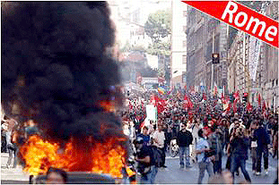
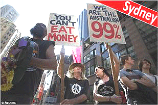
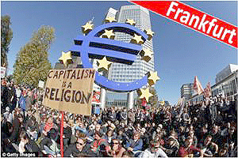
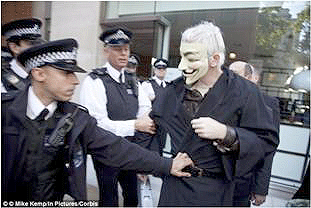
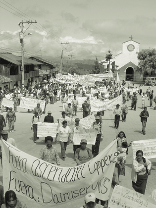

PROTESTAS EN TODAS PARTES
2011: LA INDIGNACIÓN SE GLOBALIZA

El 2011 será recordado en todo el mundo como el Año de las Protestas. Comenzó con la denominada “Primavera Árabe”, una serie de revoluciones en el Medio Oriente y África del Norte que aún no llega a su fin y cuya última “víctima” ha sido Muammar Gaddafi, dictador de Libia durante 42 años. Luego los titulares nos trajeron noticias de los “indignados” españoles, jóvenes, en gran parte, quienes durante cuatro meses ocuparon las plazas y parques de ciudades españolas para protestar la falta de empleo. Después hubo los estudiantes secundarios y universitarios chilenos e ingleses insatisfechos por la calidad y el alto precio de la educación en estos países. Y llega a su fin el 2011 con “Ocupa la calle Wall”, una protesta en el sector financiero en Nueva York, Estados Unidos. La “ocupación” empezó en septiembre y, después de pocas semanas, había extendido a centenares de ciudades. Ya se habla de “Ocupa el Mundo” porque en todas partes, hombres y mujeres, jóvenes y no tan jóvenes, se sienten asqueados por el obsceno enriquecimiento del uno por ciento de la población mundial a costa del empobrecimiento del otro 99 por ciento y de la destrucción del medio ambiente de nuestro planeta.
El culpable principal es el modelo económico, el capitalismo extremo, conocido como el neoliberalismo, que reina en todo el mundo, incluso en países que se denominan socialistas. Hasta la revista inglesa The Economist, una de las principales portavoces del modelo, planteó hace algunos meses la siguiente pregunta: “El capitalismo: ¿ha sido realmente una buena idea?”
“El 99 por ciento”
Miles de jóvenes llegaron el 17 de septiembre al parque Zucotti en Nueva York, que bautizaron el “Parque de la Libertad”. Convirtieron la franja verde en el centro de operaciones del movimiento denominado “Ocupa la calle Wall”. Su propósito inmediato: “Interrumpir, sin violencia, los intereses especiales que son desleales, incompetentes y corruptos y que han usurpado el poder civil y militar de nuestra nación, engendrando una multitud de amenazas a nuestra libertad, nuestras vidas y la seguridad nacional”, según un manifiesto publicado en Internet. Prometieron quedarse en el parque hasta ver cambios sustanciales en el sistema financiero-político.
Para que esto suceda, los manifestantes están conscientes de que tienen que educar a sus co-ciudadanos que han sido convencidos por portavoces del neoliberalismo de una serie de mentiras. Por ejemplo, que la falta de empleo se debe a los inmigrantes que les quitan puestos de trabajo a los habitantes nativos. O que la delincuencia es producto de los mismos inmigrantes y de personas vagas. O que las personas que practican la religión islámica son propensas a actos de terrorismo. O que todo bien y servicio debe ser en manos de empresas privadas, incluso la educación, la salud, las cárceles, porque el Gobierno es, siempre y en todas partes, ineficiente y corrupto mientras la empresa privada es, siempre y en todas partes, eficiente y transparente.
De hecho, dicen los manifestantes, la inmigración, la delincuencia, los actos de terrorismo son síntomas de un problema más grave: la mala distribución de las riquezas del mundo y el acceso desigual a las oportunidades. Y estos hechos son el resultado lógico de un sistema, el neoliberalismo, cuya filosofía es la búsqueda del enriquecimiento personal por medio de la competencia. Los neoliberales insisten que el resultado de su modelo será el bienestar de todos. Los hechos indican lo contrario: la brecha entre los ricos y los demás se ha convertido en un abismo durante los últimos 30 años.
El mensaje que se trasmite desde la calle Wall ha llegado lejos. Hasta el 11 de octubre, hubo manifestaciones en 800 ciudades estadounidenses. Y el 15 de octubre, un mes después del primer grito en Nueva York, el eco se escuchaba en todo el mundo, dirigido a bancos, entidades financieras y corporaciones transnacionales.
Las protestas han resultado en detenciones, en algunos casos masivas, también en todas partes. A pocas semanas del inicio de “Ocupar la calle Wall”, se contabilizaron más de 700 arrestos en Nueva York. El 11 de octubre, hubo más de cien manifestantes detenidos en la ciudad de Boston. El día siguientes, 11 cayeron presos en San Francisco por obstaculizar las entradas de la sede del Wells Fargo Bank. El 13 de octubre, la policía arrestó a 23 personas en las afueras de la gobernación en Denver. El 15 de octubre, 88 jóvenes sufrieron lo mismo en Nueva York y ese día hubo miles de arrestos en ciudades alrededor del globo.
El por qué de las protestas
Santiago Carrión, periodista español, ofrece un resumen de lo que tienen en común todas las protestas del 2011. Afirma que demuestran que la sociedad civil global, más consciente que nunca de su poder, ya no aguanta más un sistema que está en un estado avanzado de deterioro.
El deterioro se manifiesta de distintas formas. En Chile es la privatización de las universidades; en Japón es la continuación de los proyectos de energía nuclear después del catástrofe de Fukushima; en Estados Unidos es el avaro y la corrupción de las corporaciones y los bancos; en Grecia, España e Inglaterra es la destrucción del estado de bienestar social; en Brasil, Ecuador, Perú y Bolivia es la deforestación y explotación imparable de los recursos de la Amazonia.
El problema es que ya no existe un mecanismo para el control democrático de instituciones públicas y privadas. Los personajes políticos que deben vigilar por el bienestar de la ciudadanía están envenenados por los intereses de las corporaciones que financian sus campañas y también por las presiones de instituciones multilaterales como el Fondo Monetario Internacional y el Banco Central Europeo. El colapso financiero global de 2008 fue el resultado de un sector banquero sin control alguno. El costo: los ahorros, los empleos y las viviendas de millones de familias. Mientras tanto, los gobiernos “rescataron” –con el dinero de los contribuyentes en todo el mundo– a los bancos y las corporaciones colapsadas y, lejos de parar en la cárcel, los banqueros y ejecutivos corporativos responsables recibieron alzas salariales y jugosas bonificaciones. Como suele pasar en el sistema económico global, se privatizan los beneficios de las actividades económicas y se socializan los costos.
Los ejemplos en Ecuador abundan, encabezados por el caso Chevron-Texaco. Luego, tenemos la austeridad impuesta por el Estado por un lado y el creciente gasto militar del mismo Estado por otro. Hace poco, hubo críticas aquí sobre las últimas compras militares y se planteó la pregunta: ¿cuáles son los enemigos contra quienes el Estado ecuatoriano se protege? La respuesta se dibuja con mayor nitidez cada día en muchos países: son los propios ciudadanos de estos Estados cuya protesta les convierte en criminales, según las reglas del juego neoliberal. Mientras tanto, la destrucción del medio ambiente procede a zancadas, las hambrunas aparecen de nuevo en países africanos y la pobreza se prolifera en todas partes. Como consecuencia, el abismo entre los ricos y los pobres se profundiza. Una desigualdad tan obscena, resultada de una corrupción galopante que ya no hay como esconder.
Wikileaks es la organización responsable por la diseminación de miles de documentos secretos de muchos gobiernos. El soldado estadounidense Bradley Manning hizo llegar al fundador de Wikileaks, Julian Assauge, documentos secretos del Gobierno estadounidense. Se detención y la del mismo Assauge confirmaron lo que muchos habían sospechado desde hace tiempos: los gobiernos y las corporaciones temen la verdad, temen la transparencia, porque la corrupción está tan extendida que ya mismo habrá una revuelta global de suficiente fuerza para poner fin a este sistema.
Así que, según el periodista Carrión, la ciudadanía sabe cómo están actuando sus gobierno tras bastidores, saben quién tiene tanta “palanca” que nunca terminará en el calabozo, saben cómo funciona el sistema y a quién beneficia. Y peor de todo, saben que la reacción a la mayoría de gobiernos a la protesta ha sido la represión y la criminalización de las personas involucradas. Las mismas imágenes se diseminan en todo el globo: manifestantes desarmados asesinados en Túnez, Egipcia, Siria y Libia, golpeados por las fuerzas del orden en España, envueltos en nubes de gases lacrimógenos en Grecia, tomados presos en masa en Estados Unidos.
Es la globalización de la indignación, según el periodista Carrión. No obstante, advierte que es más o menos fácil animar a la gente a salir a la calle cuando la indignación llegue a cierto punto. Las manifestaciones unen a la gente y sirven para expresar el descontento de una población pasada por alto. Pero la cuestión mayor es: cómo convertir las propuestas que emergen de las protestas en políticas de Estado. Por ejemplo, el dinero de los contribuyentes ha rescatado los bancos al borde del colapso en 2008. La gente en la calle propone que se nacionalicen estas instituciones. Pero, ¿cómo? Se ha surgido la creación de alternativas al sistema bancario, de espacios para la diseminación de conocimientos en Internet como alternativa a las universidades privatizadas, de la creación de medios ciudadanos para ofrecer alternativas a las “historias oficiales” diseminadas por los medios controlados por el sistema financiero y gobiernos corruptos. Incluso se ha sugerido la creación de un partido político internacional, con control y participación democráticos.
Según Voltaire, historiador, poeta y dramaturgo del siglo XVIII, es peligroso tener la razón cuando el gobierno se equivoca. Y los gobiernos de hoy en día se han equivocado de manera garrafal e inocultable: no hay trabajo, ni para las personas con título superior. Así que, peligroso o no, los jóvenes, en especial, con toda su vida por delante, insisten en hacer preguntas incómodas. Exigen un debate sobre de qué sirve una economía, y sobre cuál es la verdadera naturaleza de los mercados. Quieren saber por qué se ha reducido la persona a “capital humana”, la comunidad a “capital social” y la naturaleza a “capital natural”, o sea, porque se ha puesto absolutamente todo al servicio de una economía que, por su parte, está al servicio de tan sólo el uno por ciento de la población humana. Una excelente pregunta.
Fuentes: “Wall Street impoverished more than 60 million people”, Zaid Jilani, ThinkProgress, 18 de septiembre de 2011; “America’s own Arab Spring? Wall Street protesters say they´re settled in”, Erin McLaughlin, ABC News, 18 de septiembre de 2011; “A sleep-in protest in the shadow of power”, Manny Jalonschi, The Indypendent, 19 de septiembre de 2011; “Media blackout ignores thousands of US day of rage protesters”, Jason Easley, PoliticusUSA, 18 de septiembre de 2011; “How a pizza joint became the official caterer of the revolution”, Adrian Chen, Gawker, 19 de septiembre 2011; “The call to occupy Wall Street resonates around the world”, Micah White y Kalle Lasn, Guardian UK, 19 de septiembre de 2011; “Wall Street protests continue, at least 6 arrested”, Colin Moynihan, The New York Times, 19 de septiembre de 2011; “NYPD not allowing tarps in camp”, Scott Galindez, Reader Supported News, 20 de septiembre de 2011;” Cate Woodruff Reporting from Wall Street Occupation”, Reader Supported News, 20 de septiembre de 2011; “Yahoo admits to blocking Wall Street protest emails”, Lee Fang, ThinkProgress, 20 de septiembre de 2011; “Wall Street protesters: over-educated, under-employed and angry”, Karen McVeigh, Guardian UK, 21 de septiembre de 2011; “Scores arrested at Occupy Boston protest site”, Ros Drasny, Reuters, 11 de octubre de 2011; “Don’t sleep through the Revolution”, Rev. Jesse Jackson, Reader Supported News, 12 de octubre de 2011; “San Francisco protesters target Wells Fargo Bank, 11 arrested”, Cecily Burt y Angela Woodall, Oakland Tribune, 13 de octubre de 2011; “Wall Street occupation goes global Saturday”, Alastair MacDonald, Reuters, 14 de octubre de 2011; “Police raid Occupy Denver after order by Governor”, Sara Burneett, Weston Gentry y Kieran Nicholson, Denver Post, 14 de octubre de 2011; “A brief history of 15-O and the global youth movement”, Santiago Carrión, 14 de octubre de 2011; “Protests spread as thousands gather in Europe, Asia”, Bloomberg, 15 de octubre de 2011; “Day of ‘global revolution’ comes to London as thousands of demonstrators take over the City”, Lee Moran, 15 de octubre de 2011; “GOP panic sets in”, Tom Degan, LA Progressive, 15 de octubre de 2011; “Occupy Wall Street’s plans for a national convention”, Linette López, Business Insider, 15 de octubre de 2011; “Global 99 Percent rally worldwide in solidarity with Occupy Wall Street”, The New York Times News Service, 16 de octubre de 2011.
{niftybox textcolor=green }
GOLPE DE ESTADO CORPORATIVO
CÓMO SE IMPUSO EL NEOLIBERALISMO

Una de los múltiples actos de rechazo a la minería en Íntag se dió en la Asamblea Zonal del 20 de mayo de 2006. Centenares de hombres y mujeres llegaron al centro de García Moreno con pancartas cuyo mensaje era "no" unánime a la mina de cobre propuesta por Ascendant Copper.
¿Cómo hemos llegado a este estado de descontento globalizado? Según el economista ecuatoriano Pablo Dávalos y otros pensadores, el factor común es la toma de gobiernos en todo el mundo por los bancos y las transnacionales. Han llevado a cabo estos golpes de Estado con la connivencia de los mismos gobiernos y de tres instituciones multilaterales: el Fondo Monetario Internacional (FMI), el Banco Mundial (BM) y la Organización Mundial de Comercio (OMC). El resultado: la imposición del neoliberalismo en todas partes.
Fase uno: el shock
En su libro La democracia disciplinaria, el economista Dávalos explica las tres fases de este golpe magistral. Todo comenzó en 1982, año en que abrió la primera fase del proceso que duró hasta 1990. Los protagonistas en el escenario mundial fueron Margaret Thatcher, la “dama de hierro” de Inglaterra, y Ronald Reagan, presidente de Estados Unidos. El arma fue el denominado “ajuste macrofiscal” o “terapia del shock” aplicado por el FMI. Los protagonistas convencieron al mundo occidental que la crisis financiera que sufría en ese momento fue causada por la irresponsabilidad de los países de América Latina que habían despilfarrado el dinero prestado por los bancos de los países desarrollados. Como resultado, dijeron, el sistema financiero del mundo occidental, o capitalista –en aquel entonces todavía existía el mundo comunista– estaba en cuidados intensivos y el único remedio era el “shock” macrofiscal.
Dicho “shock” tomó la forma de un conjunto de políticas económicas. Primero, el pago de la deuda externa se convirtió en un deber sagrado. Pagarla significó recortes en el gasto social: la educación, la salud, los subsidios. También significó la desindustrialización de los países del Sur y su retorno a su antigua especialización, esto es, la exportación de materia prima (petróleo, madera, metales) y productos agrícolas sin valor agregado (café, cacao). La desindustrialización permitió la privatización de las industrias anteriormente estatales. En el Ecuador éstas incluían el ingenio Aztra y la cementera Selva Alegre. Luego, se “flexibilizó” la fuerza de trabajo, esto es, se suprimieron los derechos de los trabajadores. Asimismo, se abrieron las puertas del país a los bienes y servicios de otros países, sin cobrar aranceles, en nombre del libre comercio. Finalmente, se suprimieron los controles sobre los bancos y mercados financieros, cuyo resultado fue, en el caso ecuatoriano, el colapso del sistema banquero-financiero en 1999.
Fase dos: la toma del Estado
La segunda fase descrita por el economista Dávalos fue la llamada reforma estructural, del 1990 al 2007. Con el Estado hecho leña, gracias a la “terapia” aplicada por el FMI, vinieron al rescate el Banco Mundial y la cooperación internacional de los países ricos. Su propósito: rehacer las leyes e instituciones. Aquí en el Ecuador, con dinero de la entidad de cooperación estadounidense USAID, se elaboró una nueva ley de trabajo que dejó despedazado el movimiento de los trabajadores quienes habían protagonizado una serie de huelgas nacionales en protesta al ajuste del FMI en la década de los 1980. Con un préstamo del Banco Mundial, se elaboró la Ley de Minería y también el mapa mineralógico del país.
Con fondos de la misma institución se financiaron el Prodepine y más proyectos dirigidos a los movimientos indígena, ambientalista, de mujeres, entre otros, a fin de “guiar” el proceso organizativo y de desarrollo local. Los proyectos consiguieron su verdadero propósito: dividir y conquistar. En cuanto a los indígenas, una buena parte del liderazgo fue reclutada para implementar los proyectos. En este papel, gozaban de excelentes sueldos, vehículos, viajes al exterior, o sea, el Banco Mundial creó una clase de “ponchos dorados” distanciada de sus bases.
Para completar el cuadro, la institución tomó como suyos conceptos existentes o inventó nuevos conceptos y los diseminó: de un momento a otro, la “participación ciudadana”, el “desarrollo económico territorial”, la “modernización del Estado”, el “presupuesto participativo”, la “descentralización” estaban de moda. Nos tenía a todos en nuestras reuniones a todo nivel trabajando con “marcos lógicos” e identificando nuestras fortalezas, oportunidades, debilidades y amenazas, el famoso FODA. Según el economista Dávalos, el propósito de los proyectos y el “discurso” que se robó en buena parte a los movimientos de derechos humanos, indígena y ecologista, fue “bloquear las capacidades políticas de organizaciones y movimientos”.
Fase tres: cuando las corporaciones reinan
Y este bloqueo, junto con la reforma estructural con sus nuevas leyes, hizo posible la tercera fase, lo que el economista Dávalos describe como la “privatización territorial, desposesión y criminalización social”, fase que comenzó en el 2000 y en que estamos inmersos hoy. Aquí el Estado se reduce a su mínima expresión. Su único papel es asegurar que la ley se cumpla para que las corporaciones no tengan problemas al implementar sus proyectos de minería o de represas hidroeléctricas gigantes. Estos proyectos representan la privatización territorial y la desposesión. O sea, las comunidades dentro de la concesión de cobre en Junín, por ejemplo, son los dueños del bosque comunitario, pero es una posesión teórica, no más. Porque al llegar a explotar el mineral, que pertenece en teoría a un Estado reducido al rol de guardián de las empresas mineras, ese bosque desaparecerá. Y los bosques que sobrevivan la minería, las actividades petroleras, la creación de plantaciones para el cultivo de biocombustibles, serán convertidos en proveedores de “servicios ambientales” de venta al mayor postor.
Por su parte, las personas que se oponen a la privatización de todo ya han sido convertidos en criminales. Porque el capitalismo necesita enemigos. Al desaparecer el comunismo, se inventaron otros: los nuevos enemigos son los “terroristas”: indígenas, ecologistas, jóvenes sin posibilidad de trabajo, todos son enemigos de los gobiernos neoliberales, que incluyen los que se denominan seguidores del Socialismo del Siglo XXI.